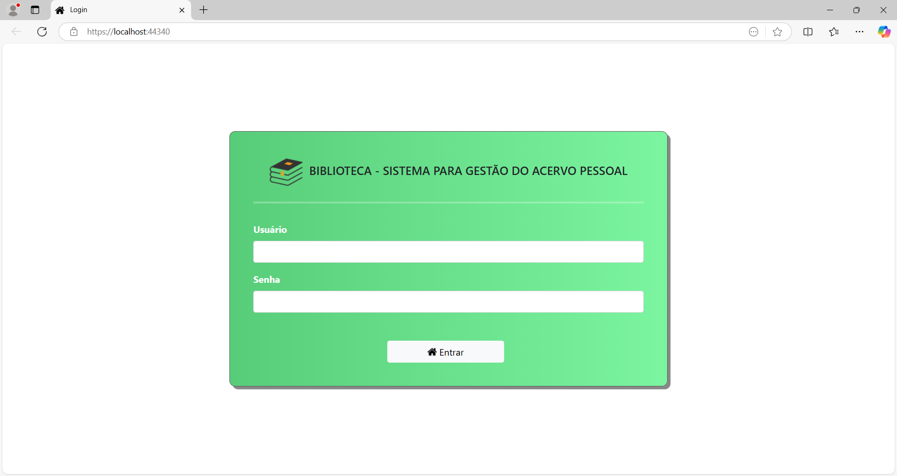
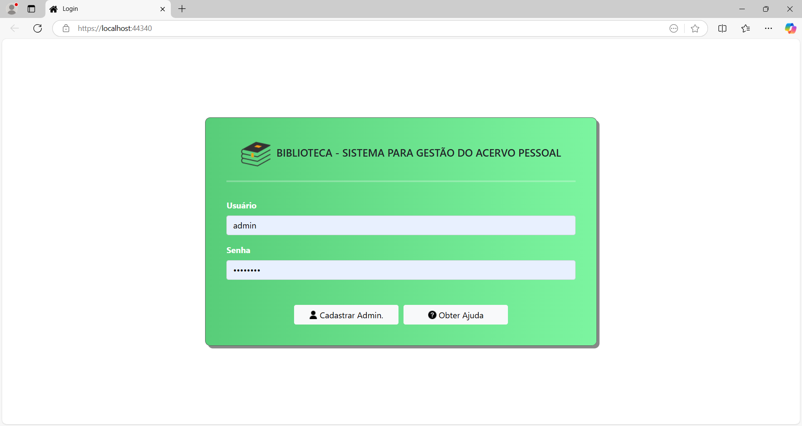

Login
Para acessar o sistema, na página de login, digite o seu nome de usuário no campo Usuário e a sua senha de acesso no campo Senha e clique no botão Entrar.

Primeiro acesso
Se for a primeira vez que você acessa o sistema, não terá nenhum usuário cadastrado ainda, e a página de login terá o seguinte aspecto:

É necessário fazer o cadastro do usuário administrador, que terá os privilégios necessários para cadastrar os demais usuários que utilizarão o sistema.
Para cadastrar o administrador, clique no botão Cadastrar Admin.. Vai abrir a seguinte página:
Preencha os campos:
Nome: Nome completo do usuário administrador.
Usuário: Nome de usuário do administrador.
Senha de acesso: Senha de acesso do administrador.
Confirme a senha: Confirmação da senha de acesso.
Após preenchidos todos os campos, clique no botão Salvar. Finalizado o cadastro, faça o login no sistema para cadastrar os demais usuários.
Atenção!
Há somente um usuário com privilégio de administrador, e ele é o único que pode criar contas de usuários convidados, retirar-lhes o acesso ou alterá-las, logo, é importante que os dados deste usuário sejam preservados com bastante cuidado.